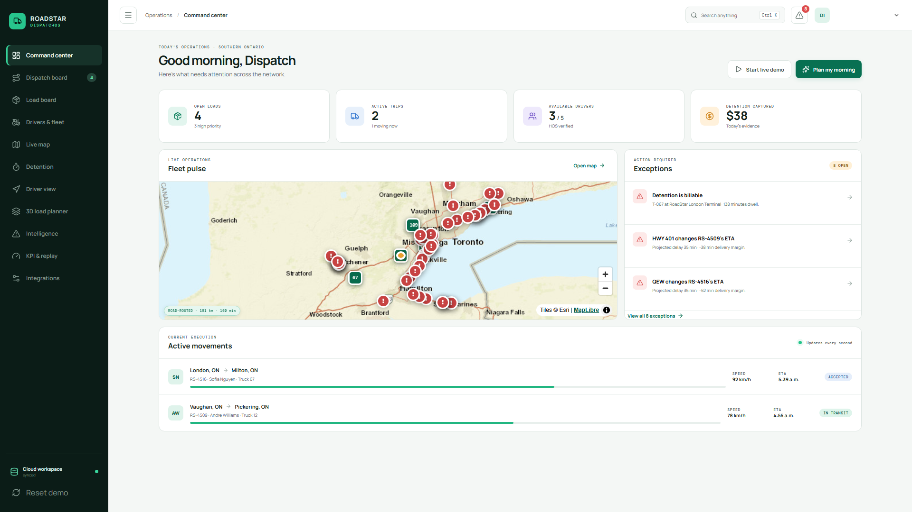
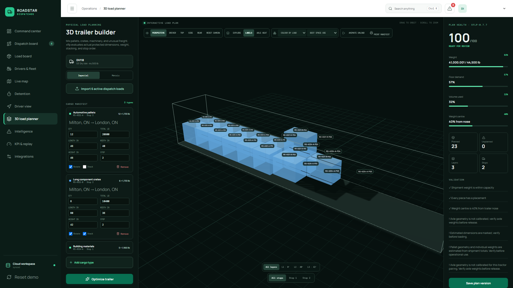
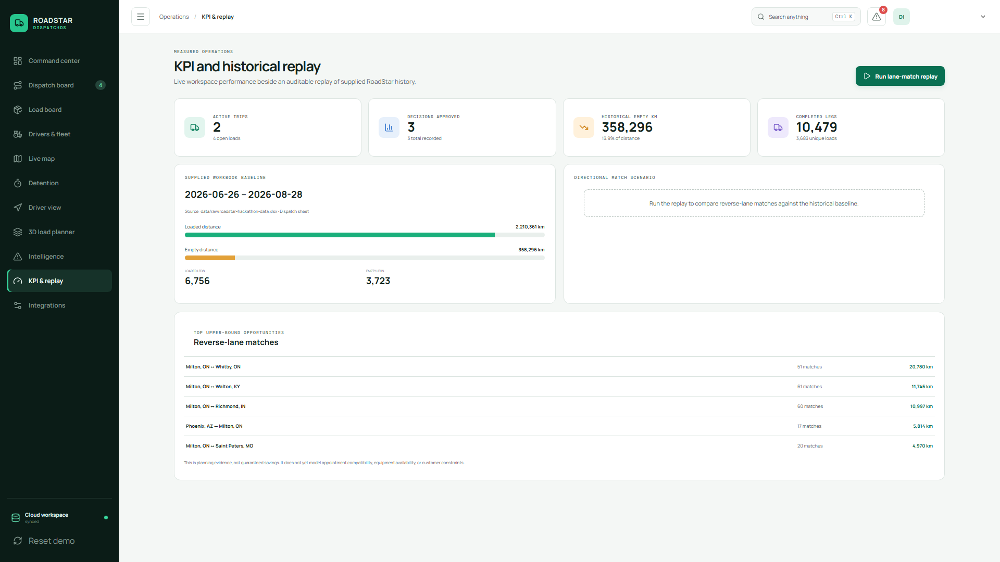
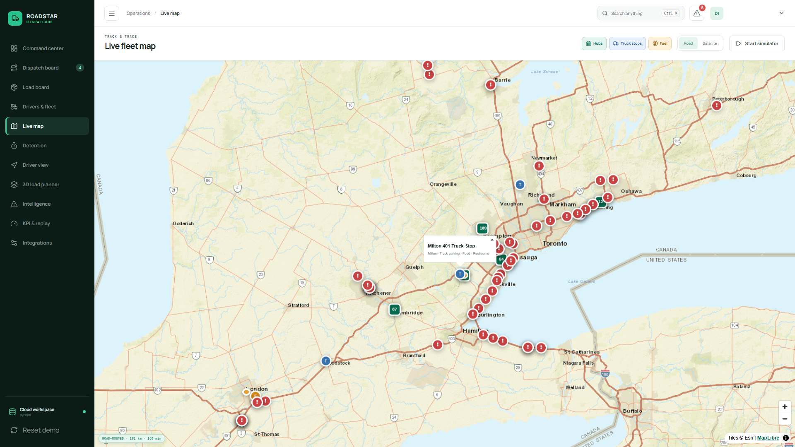
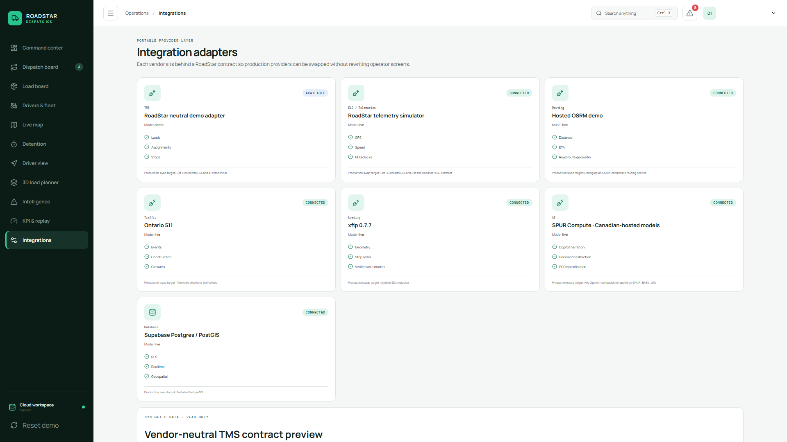

ROADSTAR / DISPATCHOS
One operating system for every RoadStar move.
Quote more freight. Dispatch with confidence. Prove every kilometre, decision, and detention minute.
ROADSTAR / DISPATCHOS
Five disconnected tools turn dispatch into manual orchestration.
~5 systems per dispatcher · 1–3 missed jobs/day · $15K–$50K+ monthly revenue at risk
$15K–$50K+ monthly opportunity
ROADSTAR / DISPATCHOS
One shared workspace moves a load from intake to auditable revenue.
Load intake → eligibility → approval → driver action → live execution → evidence

ROADSTAR / DISPATCHOS
Every mixed load becomes a safe, explainable 3D plan before wheels move.
Mixed cargo · true layers · floor and axle guards · unload sequence

ROADSTAR / DISPATCHOS
Historical replay turns empty kilometres into a ranked opportunity list.
10,479 completed legs · 358,296 empty km · opportunities, not guaranteed savings

ROADSTAR / DISPATCHOS
Southern Ontario’s dense freight grid rewards one shared operating picture.
Live routing · Ontario 511 · satellite · hubs · fuel · truck stops · breadcrumbs

ROADSTAR / DISPATCHOS
The custom TMS core is live—and its integrations are designed to be replaceable.
RoadStar owns the workflow, rules, organization-scoped schema and decision history.
loadscargo_itemsloading_planstrailersdriversrecommendationsdecision_recordsdetention_events

ROADSTAR / DISPATCHOS
Prove the value in one controlled RoadStar pilot.
30 days · one dispatch desk · one real feed · three measurable outcomes